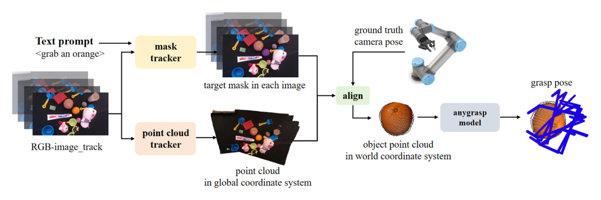

IROS机器人领域顶会第一作者
MASt3RGrasper：用 2–3 张 RGB 图像完成语言引导抓取
MASt3RGrasper: A Real-Time Language-Guided Robotic Grasping Approach with Minimal RGB Images
不用深度相机，只拍 2–3 张 RGB 图像：以 MASt3R 的稠密对应逐帧融合点云，并用机械臂正运动学给出的相机位姿作约束，省去全局优化、恢复真实尺度；再由微调的 CLIP 选定目标、SAM2 跨视角跟踪，交给 AnyGrasp 生成六自由度抓取位姿。
90.4%见过的物体抓取成功率84.2%未见过的物体≈ 2.0 s全流程耗时156 次UR5 真机抓取